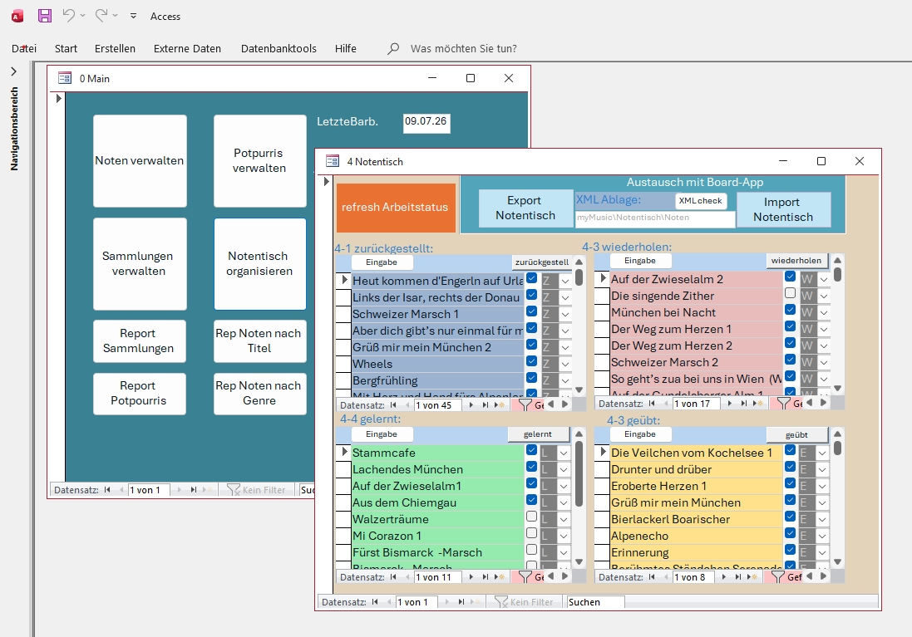

Ordnung statt Notenchaos – übersichtlich, flexibel und perfekt für deinen Übungsalltag.
Überblick
Notentisch bringt Ordnung in dein Notenchaos: Statt vieler einzelner Blätter auf dem Pult verwaltest du deine Noten bequem auf dem Bildschirm. So hast du beim Üben alles im Blick, findest Stücke schneller und kannst dich voll auf die Musik konzentrieren.
Egal ob du übst, probst oder auftrittst – Notentisch sorgt dafür, dass du deine Musik immer vollständig im Blick hast. Kein Suchen, kein Blättern, kein Chaos. Nur deine Noten, perfekt
präsentiert.
Dein Übungsverlauf
Dein Übungsfortschritt wird durch vier klar definierte Stapel sichtbar: Zurückgestellt, Wiederholen, Geübt und Gelernt. Jedes Blatt wandert automatisch oder manuell in den passenden Bereich. So entsteht ein intuitiver Übungsverlauf, der dir zeigt, welche Stücke du bereits sicher beherrschst und welche du noch vertiefen möchtest.
Anpassbare Darstellung
Du kannst die Anzahl der sichtbaren Stapel reduzieren, das Layout verbreitern oder die Darstellung für große Notenblätter optimieren.
Auch den Hintergrund kannst du dir individuell gestalten. Dazu kannst du Muster verwenden, die du dir zuvor aus Image-Websites heruntergeladen hast.
Alle Anpassungen werden automatisch gespeichert, sodass du jederzeit genau dort weitermachst, wo du aufgehört hast.
Intelligente Suche
Die Suche ist so flexibel wie du: Gib einen Titel ein, suche ihn aus der Blättersnsicht, oder spiele die ersten Takte eines Stücks – Notentisch erkennt die Melodie und öffnet das passende Blatt automatisch. Ideal für große Sammlungen, spontane Sessions oder wenn du ein Stück im Kopf hast, aber den Titel nicht mehr weißt.
Genaue Beschreibung
📄 Notentisch – dein digitaler Notenständer
Notentisch bringt Ordnung in dein Notenchaos: Statt vieler einzelner Blätter auf dem Pult verwaltest du deine Noten bequem auf dem Bildschirm. So hast du beim Üben alles im Blick, findest Stücke schneller und kannst dich voll auf die Musik konzentrieren.
🖥️Notentisch zeigt auf dem Bildschirm ein großes zentrales Notenfeld, und links und rechts kleinere Fenster für die vier Notenstapel. Die Stapel sind benannt nach Arbeitszuständen die deinem Übungsverlauf entsprechen. Mit den Buttons der unteren Zeile können die Funktionen gesteuert werden.
📚 Du hast deine Notenblätter gescannt, die Dateinamen den Titeln angepasst und als Notenliste gespeichert. Damit kannst du sofort beginnen. Notentisch übernimmt die Blätter und ordnet ihnen zunächst den ersten Bearbeitungsstand zu: den Stapel zurückgelegt. Die weiteren Stapel heißen wiederholen, geübt und gelernt.
🔄 Durch Verschieben der Blätter zwischen den Stapeln wird automatisch der neue Arbeitsstand zugeordnet – ganz nach deinem Übungsverlauf.
🎼 Die Darstellung im Bildschirm kannst du vielfältig an deine Spielgewohnheiten anpassen: zum Beispiel breiter für dreiseitige Notenblätter oder mit weniger Stapeln, aber größerem Notenfeld. Auch den Hintergrund kannst du individuell gestalten.
🔍 Neben dem Verschieben aus den Stapeln kannst du deine Noten auch über Textsuche, Bildsuche oder durch Vorspielen der ersten Takte aufrufen. Dazu musst du die Stücke einmal einspielen.
✏️ Wenn ein Blatt im zentralen Notenfeld liegt, kannst du es weiter formatieren – etwa durch Positionierung oder Vergrößerung. Notentisch merkt sich diese Einstellungen und stellt sie beim nächsten Öffnen des Blattes automatisch wieder her.
🗂️ Arbeitsstand, Format, Erkennungstonsequenz und Zeitpunkt der Ablage werden dem Notentitel in der Notenliste zugeordnet und gespeichert. Damit kannst du die Daten in einer externen Notensammlung weiterverwenden. Ich habe dazu eine MS‑Access‑Datei entworfen.
🗃️ Das Notenverzeichnis in MS Access arbeitet zusammen mit deinem Notenverzeichnis. Du kannst die aktuelle Notenliste aus Notentisch per Knopfdruck übernehmen und den dort gespeicherten Titeln zuordnen.
🔁 Das funktioniert natürlich auch umgekehrt: Erstelle zuerst eine Notenliste in Access und exportiere sie per Knopfdruck in das Notentisch‑Verzeichnis.
📝 In Access kannst du beliebig viele weitere Bearbeitungsstände hinzufügen, z. B. Neuzugang oder erst gespielt. Du kannst die Notenliste komplett neu erstellen, Zuordnungen zu Heften vornehmen oder Potpourris zusammenstellen.
Eine sehr nützliche Funktion ist das Umbenennen eines Notenscans: Nach dem Einscannen vergeben Scanner oft eigene Dateinamen. Mit einer speziellen Funktion kannst du diese elegant ändern.
🔗 Schiebe dazu den Scan in deinen Notenordner, übertrage den Hyperlink anschließend nach Access, und ein Knopfdruck benennt den Scan‑Titel in deinen eigenen Notentitel um.
📥 Ein mit anderen Tools erstelltes Notenverzeichnis kannst du sehr wahrscheinlich übernehmen – mit hilfe des Export/Import‑Mechanismus in Access.
Galerie

Download & Installation
Lade die aktuelle Version von Notentisch herunter und starte die Anwendung direkt aus dem entpackten Ordner.
Hinweis: Dieses öffentliche Download-Paket enthält nur die Anwendung und keine Notenblätter oder persönlichen XML-Daten. Eigene PDF-Noten werden nach dem Entpacken im Ordner Blätter abgelegt oder mit diesem Ordner verknüpft. Die zehn Beispiel-PDFs werden in einem getrennten Archiv gepeichert und sind nicht Bestandteil dieses Downloads.
daher musst du zunächst deine Notenblätter scannen und in einem Ordner Blätter ablegen. Die Dateinamen der PDFs sollten den Titeln entsprechen, damit du sie besser erkennen kannst. Alternativ kannst du auch eine bestehende XML-Datei verwenden, die du zuvor schon mit deinem Access erstellt hast. Diese XML-Datei enthält die Titel und Arbeitsstände deiner Noten und wird von Notentisch beim Start automatisch geladen.
Für Hardware empfehle ich einen Monitor mit 3/2 Format, z. B. 1920×1280 oder 2048×1365 Pixel.
Außerdem brauchst du ein Windows-System, z. B. auf einem Tablet, das du über USB an den Monitor anschließt. Darüber sollte auch die Stromversorgung laufen, damit du dir ein Kabel sparst.
Nach dem Download
Entpacke die ZIP-Datei in einen beliebigen Ordner (z. B. C:\Notentisch).
Starte AutoInstaller.bat per Doppelklick.
Das Skript führt einmalig setup_notentisch.ps1 und extract_cards.ps1 aus und startet danach Notentisch.bat.
Der Server startet im Hintergrund, der Browser öffnet sich automatisch mit dem Notentisch-Board.
Falls Windows die Ausführung blockiert, bestätige die Sicherheitsabfrage mit „Trotzdem ausführen“.
Erststart – was passiert dabei?
Beim ersten Start ist die App leer: noch kein XML, noch kein Blätter-Verzeichnis. (Das XML ist eine Excel-Datei, die deine Notentitel und deren Arbeitsstatus speichert.
Klicke auf LADEN. Du wirst durch folgende Schritte geführt:
Kein XML vorhanden? Dialog abbrechen → die App fragt, ob aus einem PDF-Ordner automatisch eine XML erstellt werden soll → Ja → PDF-Ordner wählen → XML wird sofort aus den Dateinamen erzeugt.
XML vorhanden? Datei auswählen – das Board lädt direkt.
Da Browser keinen dauerhaften Dateisystem-Zugriff erlauben, müssen die Ordner nach einem Browser-Neustart einmalig neu gewählt werden.
Weitere Hinweise findest du im README.md und Install.md im Repository.